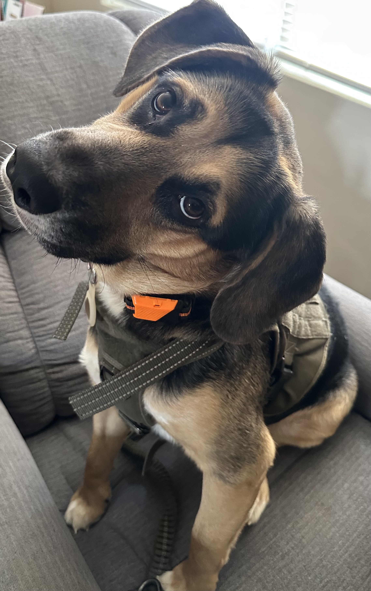

OUR STORY
Compassionate care for every companion.
New Winchester Animal Clinic is located in Danville, Indiana. Our goal is to provide quality veterinary care for animals and support the people who love them.
We welcome small and large animal patients and strive to make every visit a positive experience.

Our Mission
To provide compassionate veterinary care while building lasting relationships with animals and their owners.
COME VISIT US
Appointment Information
We'd love to hear from you!
7244 W. US Highway 36
Danville, Indiana 46122
(317) 539-6612